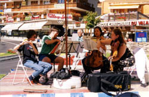

LANGUE ET CULTURE 2
Après
un rêve - Romain Bussine
Dans un sommeil que charmait ton image
Je rêvais le bonheur, ardent mirage;
Tes yeux étaient plus doux, ta voix pure et sonore,
Tu rayonnais comme un ciel éclairé par l’aurore;
Tu m’appelais et je quittais la terre
Pour m’enfuir avec toi vers la lumière,
Les cieux pour nous entr’ouvraient leurs nues,
Splendeurs inconnues, lueurs divines entrevues.
Hélas! hélas, triste réveil des songes,
Je t’appelle, ô nuit, rends-moi tes mensonges,
Reviens, reviens radieuse,
Reviens, ô
nuit mystérieuse!
charmait < charmer to charm
une image image; que charmait ton image which your image
made delightful
rêver to dream of (IN:
link to rêvais)
le bonheur happiness
rayonner (IN: link to
rayonnais) to shine forth
l’aurore dawn
la lumière light
entr’ouvrir to open slightly (IN: link to entr’ouvraient)
la lueur gleam
entrevoir to catch sight of (IN: link to entrevues)
la nue cloud (literary
for le nuage)
le réveil awakening
le songe dream
le mensonge lie
radieux shining